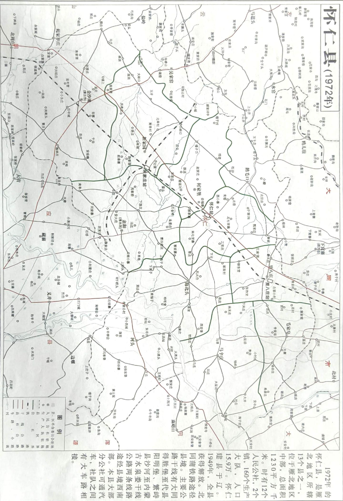
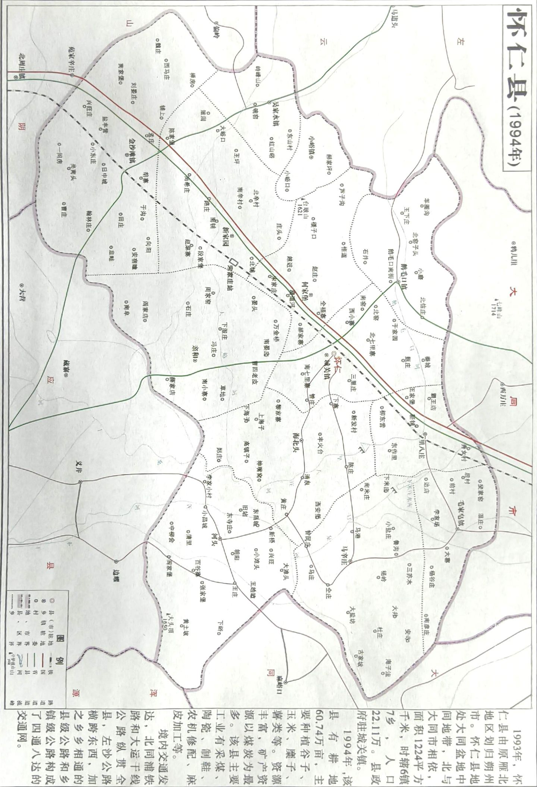
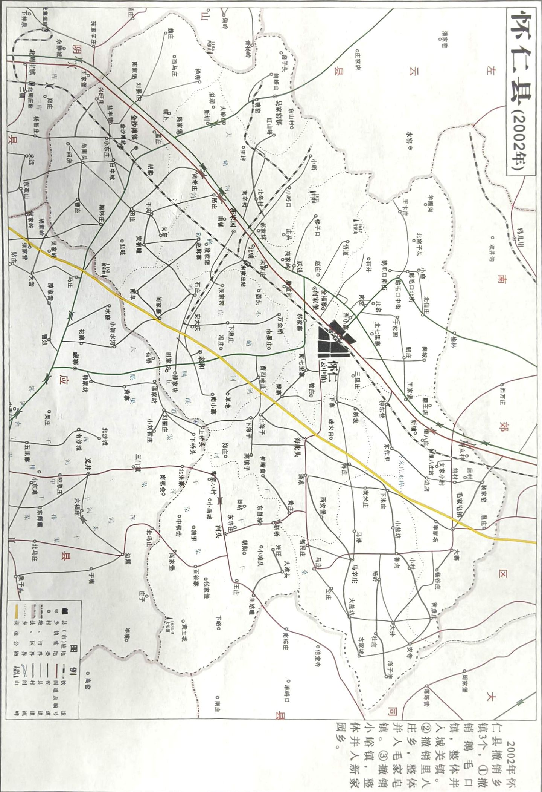
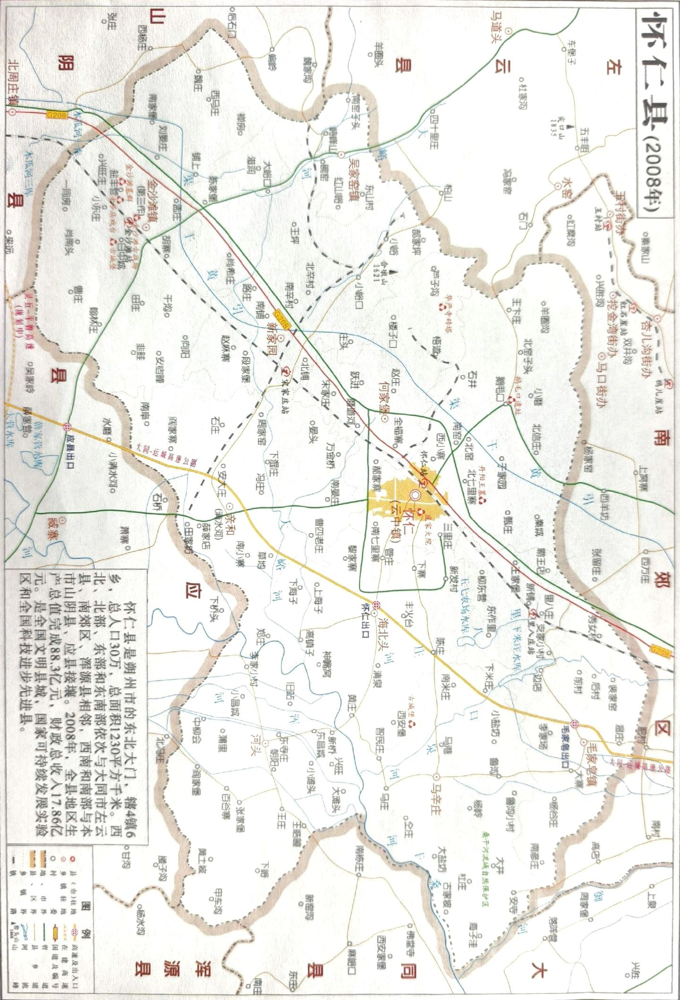
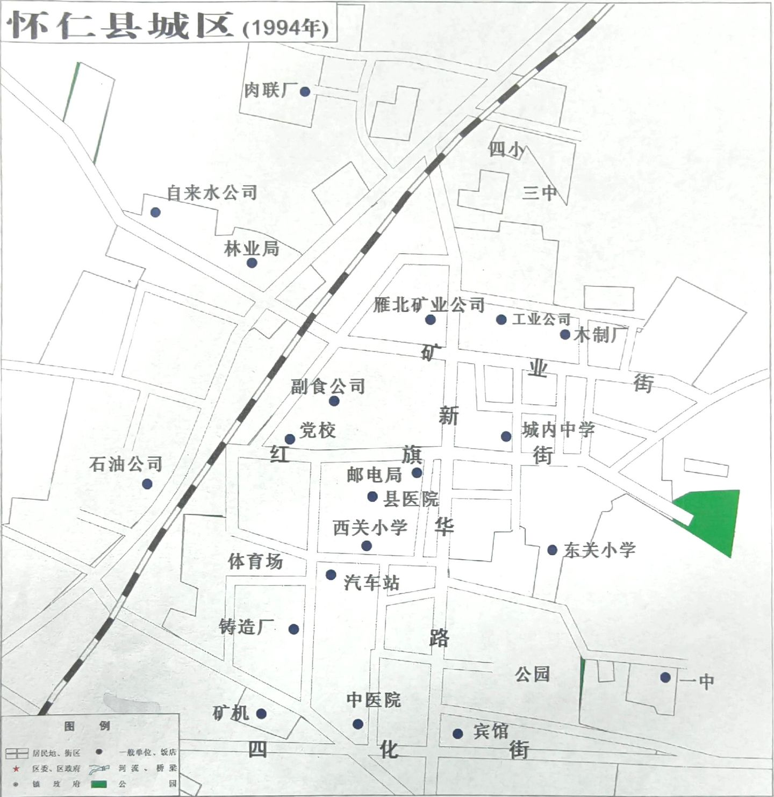
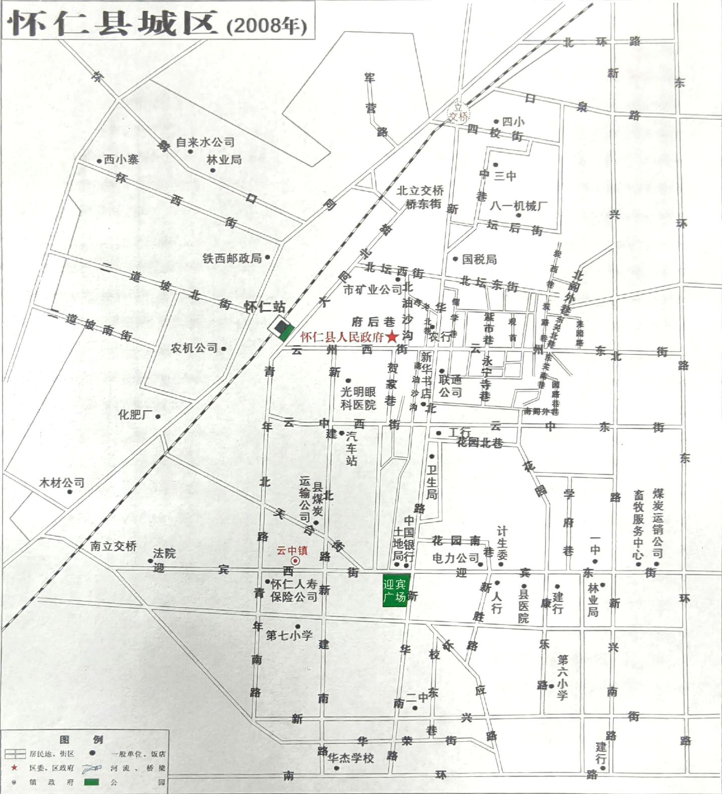

· 电子地图 ·
怀仁 · 电子地图
百度地图 · 怀仁市
可拖拽缩放查看
· 360 全景 ·
怀仁 · 全景漫游
以 720 度全景视角漫游怀仁，点击场景可全屏沉浸浏览。
全景 1
全景 2
全景 3
全景 4
全景 5
全景 6
· 历史地图 ·
怀仁 · 历史地图
点击图片可放大查看细节，支持拖拽与滚轮缩放。

1972 县域地图

1994 县域地图

2002 县域地图

2008 县域地图

1994 城区地图

2008 城区地图